Path Following Guidance
Overview
Path following asks a vehicle to converge to a geometric path and then travel along it, with no requirement on when it reaches each point. It is therefore well suited to UAVs, whose speed and turn rate are limited and which are subject to wind. I have worked on the problem from two directions:
Virtual-target guidance
A pseudo-target moves along the path and the UAV is guided to rendezvous with it, as in pursuit. The method needs neither a projection onto the path nor curvature information. The designs cover fixed-time convergence, wind, 3D motion, and bounded speed and turn rates.
Approach 2Cross-track error guidance
The UAV regulates its perpendicular distance \(d\) to the closest point on the path. Terminal sliding mode gives finite-time convergence, and nested saturation gives a provably bounded lateral acceleration in 2D and 3D, with processor-in-the-loop validation.
Main Contributions
A pursuit-based formulation in which the path is the trajectory of a pseudo-target, so the same law follows straight lines, arcs, and arbitrary smooth curves without curvature information or switching.
Fixed-time convergence of the range and look angle, with a settling-time bound that is independent of the initial conditions and is set before the mission.
Explicit treatment of wind, including time-varying wind, through the wind triangle instead of as an unmodeled disturbance.
A fully coupled three-dimensional design, with an optimal split of the turning effort between the pitch and yaw channels.
Bounded-input designs that keep speed and angular rates strictly inside prescribed limits, for both fixed-wing (\(V_0>0\)) and multirotor (\(V_0=0\)) UAVs.
Cross-track guidance with finite-time convergence by terminal sliding mode, and with a lateral acceleration that provably never exceeds its limit by nested saturation, validated on a Raspberry Pi in processor-in-the-loop tests.
Most classical methods compute the cross-track error to the closest point on the path. That projection is ill-defined near points of high curvature, and it usually requires the curvature of the path or a separate law for each path segment (line, arc, …). This approach recasts path following as a pursuit problem. A pseudo-target moves along the desired path, and the UAV is guided to rendezvous with it and then fly with it. The guidance law needs only the range and line-of-sight angle to that point, so it applies to any smooth path without knowledge of its curvature and with no switching between path segments. Using fixed-time stability theory, the convergence time is bounded by a constant that the designer sets through the gains and that does not depend on where the UAV starts.
Place a pseudo-target
A reference point S moves along the path with speed \(v_r\). Its turn rate, which is set by the path curvature, is unknown to the UAV but bounded.
Turn onto a pursuit course
The turn-rate command drives the look angle \(\xi=\theta-\chi\) between the UAV's course and the line of sight to zero in fixed time.
Close the range
The speed command drives the range \(r\) to zero in fixed time. With \(r=0\) the UAV lies on the path and flies along it with the pseudo-target.
The simulation uses the guidance law of Kumar, Sinha & Kumar (AST 2024) with the paper's gains (\(\mathcal M_1=20,\ \mathcal N_1=5,\ \mathcal M_2=50,\ \mathcal N_2=25,\ \alpha_i=1.01,\ \beta_i=0.9\)). The curvy path and the starts C1–C3 are those of the paper's first scenario, with a 15 m/s wind. Ground speed is limited to 10–50 m/s and turn rate to \(\pm4\) rad/s. The look angle (red arc) vanishes first, and then the range closes. The design accounts for the wind explicitly, so the ground track is the same with the wind on or off. Only the airspeed and the heading change, and the aircraft crabs into the wind.
How the Work Developed
Planar Path Following in Wind
Robust Path-following Guidance for an Autonomous Vehicle in the Presence of Wind
Saurabh Kumar, Abhinav Sinha, and Shashi Ranjan Kumar, Aerospace Science and Technology, Vol. 150, 2024, 109225.
The UAV moves in the horizontal plane with ground speed \(v_g\), course \(\chi\), and course rate \(\omega_g\). The pseudo-target \(S\) moves along the path with known speed \(v_r\) and an unknown but bounded turn rate \(\omega_r\). With \(r\) the range to \(S\) and \(\theta\) the line-of-sight (LOS) angle, the engagement is described by
\[ \dot r = v_r\cos(\theta-\psi_r) - v_g\cos(\theta-\chi), \qquad \dot\theta = \frac{-v_r\sin(\theta-\psi_r) + v_g\sin\xi}{r}, \qquad \xi = \theta-\chi. \]
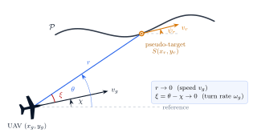
The ground speed is designed so that the range obeys a fixed-time reaching law,
\[ v_g = \frac{v_r\cos(\theta-\psi_r) + \mathcal M_1 r^{\alpha_1} + \mathcal N_1 r^{\beta_1}}{\cos(\theta-\chi)} \quad\Longrightarrow\quad \dot r = -\left(\mathcal M_1 r^{\alpha_1} + \mathcal N_1 r^{\beta_1}\right), \]
and the course rate does the same for the look angle,
\[ \omega_g = \frac{v_r}{r}\big(\tan\xi\cos(\theta-\psi_r) - \sin(\theta-\psi_r)\big) + \frac{\tan\xi}{r}\left(\mathcal M_1 r^{\alpha_1} + \mathcal N_1 r^{\beta_1}\right) + \left(\mathcal M_2|\xi|^{\alpha_2} + \mathcal N_2|\xi|^{\beta_2}\right)\mathrm{sign}(\xi), \]
with \(\alpha_i>1\) and \(0<\beta_i<1\). Neither command uses \(\omega_r\), so no curvature information is needed. By a fixed-time stability argument (Polyakov), the range and look angle reach zero within
\[ T_i \le \frac{1}{\mathcal M_i(\alpha_i-1)} + \frac{1}{\mathcal N_i(1-\beta_i)}, \qquad i = 1,2, \]
whatever the initial range and heading. Choosing \(T_2 < T_1\) aligns the UAV with the LOS before it reaches the path, which keeps the commands bounded. In steady state the course matches the path tangent (\(\chi\to\psi_r\)) and the ground speed matches the pseudo-target (\(v_g\to v_r\)).
Wind enters through the wind triangle. Given the ground velocity the guidance asks for and the wind \(\mathbf w=(w_x,w_y)\), the UAV flies the airspeed and heading
\[ v_a = \sqrt{v_g^2 - 2v_g(w_x\cos\chi + w_y\sin\chi) + v_w^2}, \qquad \psi_a = \chi + \sin^{-1}\!\left(\frac{w_x\sin\chi - w_y\cos\chi}{v_a}\right). \]
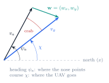
The paper evaluates the law under a strong constant wind (60% of the ground speed), time-varying wind, minimum-radius turns, a time-varying pseudo-target speed, autopilot lag, and noisy initial conditions and wind estimates (200-run Monte Carlo). It also compares the law with asymptotic and finite-time variants and with existing guidance laws.
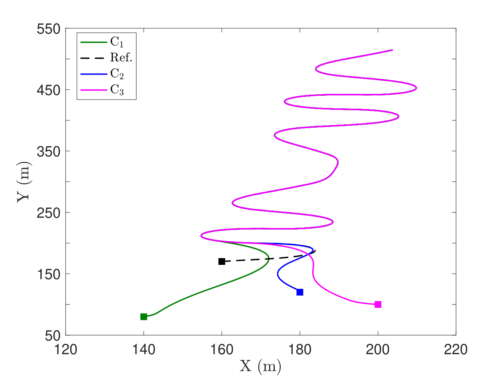
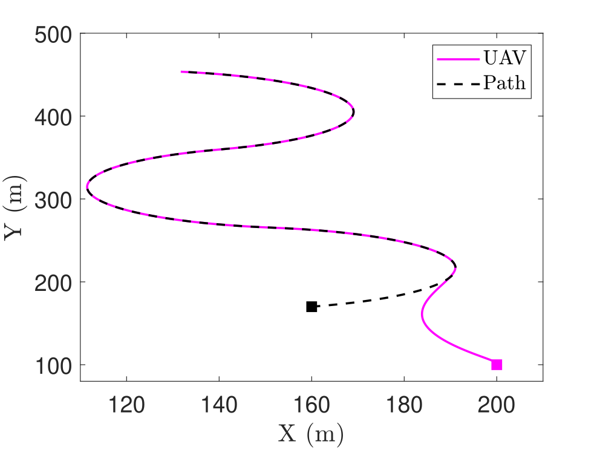
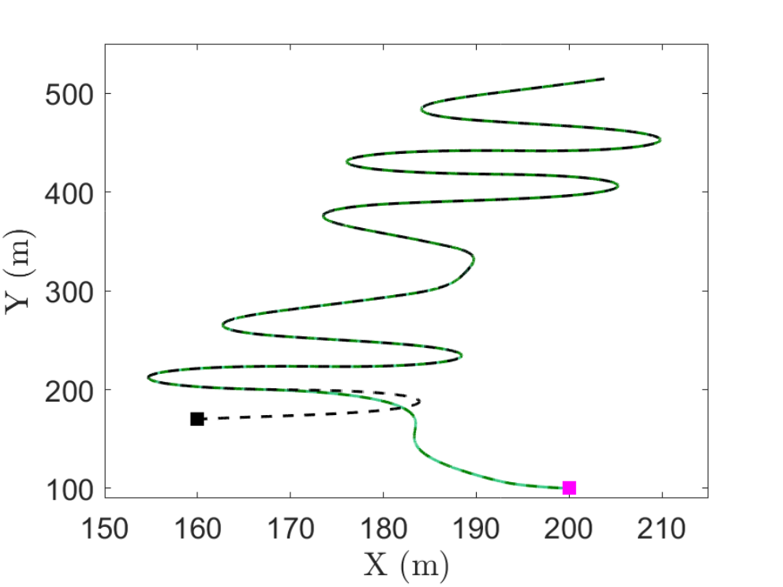
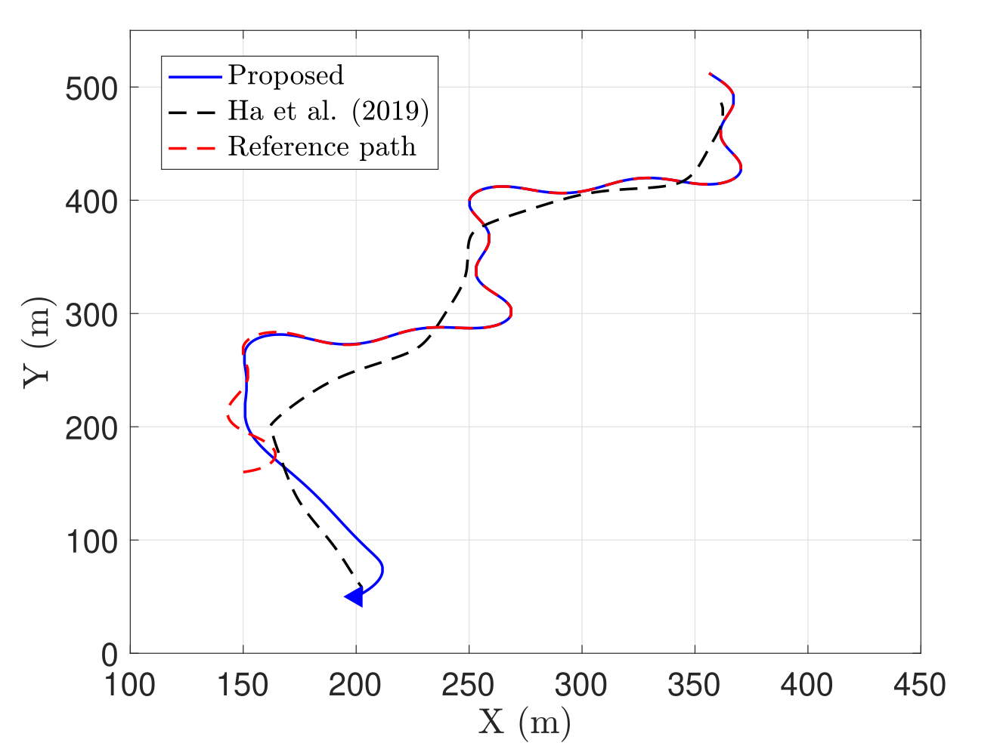
Simulation video from the paper: path following along a curvilinear path under a constant wind.
Three-Dimensional Path Following
Three-Dimensional Path Following Nonlinear Guidance for Unmanned Aerial Vehicles
Saurabh Kumar, Shashi Ranjan Kumar, and Abhinav Sinha, AIAA Journal of Guidance, Control, and Dynamics, Vol. 47, No. 6, 2024, pp. 1231–1240.
In three dimensions the LOS has an azimuth \(\psi\) and an elevation \(\theta\), and the UAV's velocity makes lead angles \(\psi_U\) and \(\theta_U\) with it. Common practice splits the problem into decoupled horizontal and vertical planes. In contrast, this work retains the full pitch–yaw coupling of the engagement:
\[ \dot r = V_T\cos\theta_T\cos\psi_T - V_U\cos\theta_U\cos\psi_U, \]
\[ \dot\theta = \frac{V_T\sin\theta_T - V_U\sin\theta_U}{r}, \qquad \dot\psi = \frac{V_T\cos\theta_T\sin\psi_T - V_U\cos\theta_U\sin\psi_U}{r\cos\theta}. \]
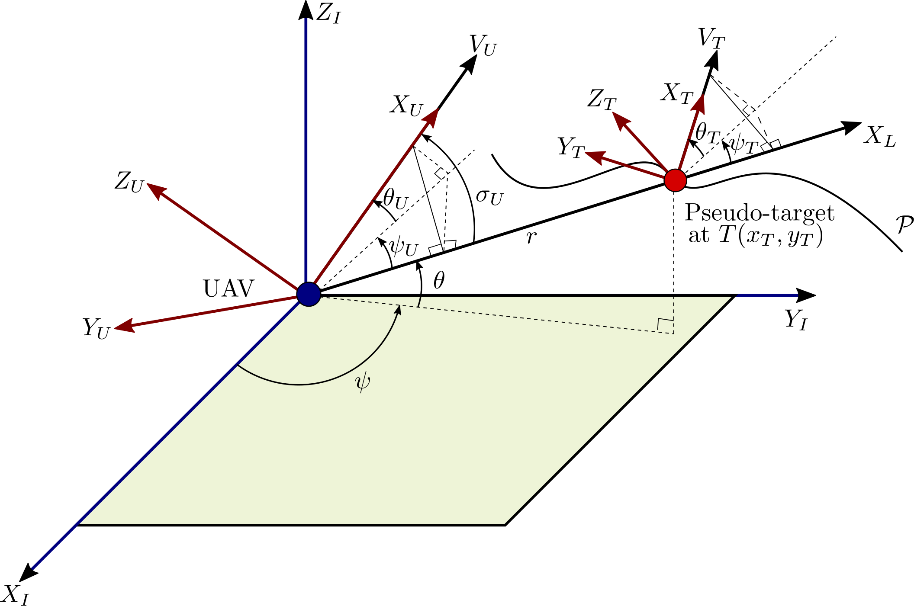
The design is built on the effective heading angle \(\sigma_U\), the single angle between the UAV's velocity and the LOS, defined by \(\cos\sigma_U = \cos\psi_U\cos\theta_U\). The speed command
\[ V_U = \frac{V_T\cos\theta_T\cos\psi_T + \mathcal M_1 r^{\alpha_1} + \mathcal N_1 r^{\beta_1}}{\cos\theta_U\cos\psi_U} \]
closes the range in fixed time. An auxiliary input \(\Sigma = \sin\theta_U\cos\psi_U\,\omega_U^z + \sin\psi_U\,\omega_U^y\) is designed so that
\[ \dot\sigma_U = -\left(\mathcal M_2|\sigma_U|^{\alpha_2} + \mathcal N_2|\sigma_U|^{\beta_2}\right)\mathrm{sign}(\sigma_U), \]
which puts the UAV on a pursuit course in fixed time. One \(\Sigma\) can be produced by infinitely many pairs of pitch and yaw rates. The paper chooses the pair that minimizes the weighted turning effort \(\sqrt{(\omega_U^z/\Upsilon_z)^2 + (\omega_U^y/\Upsilon_y)^2}\), which gives closed-form commands and lets the designer bias effort toward the yaw or the pitch channel. The paper also shows that the apparent singularity at \(\sigma_U = \pm\pi/2\) is not an attractor, so the commands stay well defined.
Settings of the paper's helix scenario: the pseudo-target flies at \(V_T=25\) m/s with body rates \(\omega_T^y=\sin t\), \(\omega_T^z=\cos t\). Gains are \(\mathcal M_1=\mathcal N_1=0.5,\ \mathcal M_2=\mathcal N_2=100\), with \(V_U\le 40\) m/s and turn rate \(\le 3\) rad/s. The turn is allocated with \(\Upsilon_y=\Upsilon_z\), i.e. minimum net angular speed. The straight-line case uses the four starts S1–S4 of the paper's Table 1. Shadows on the ground plane indicate depth.
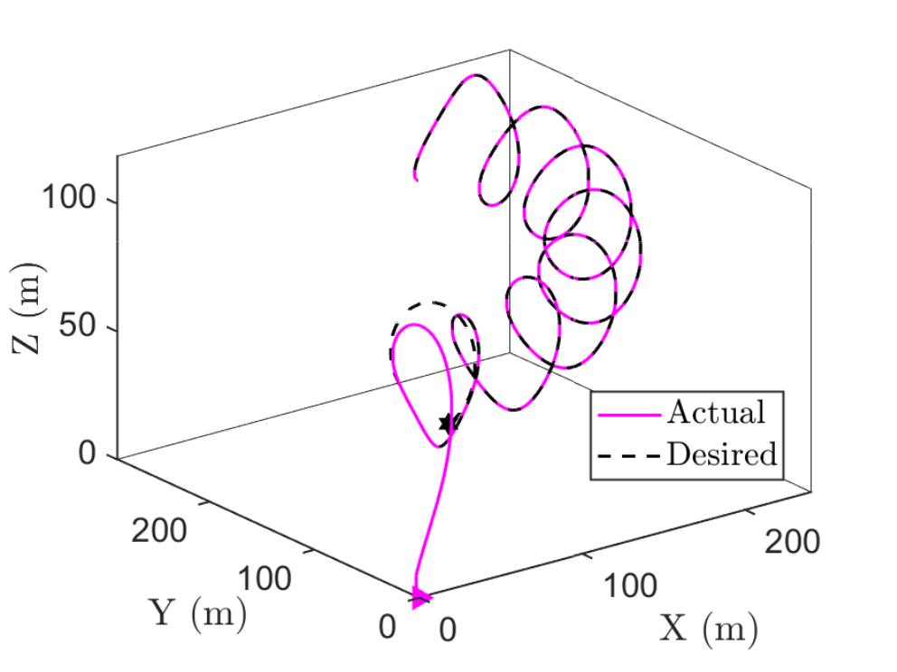
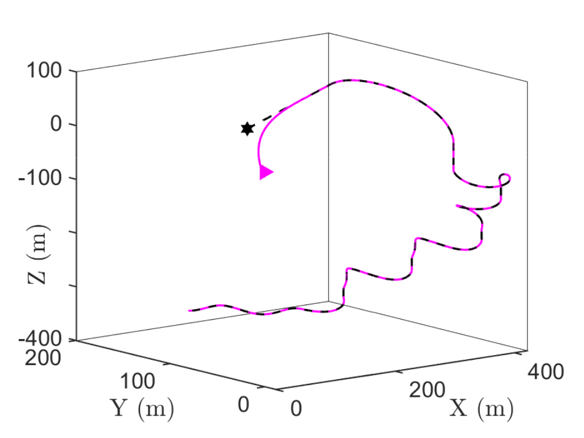
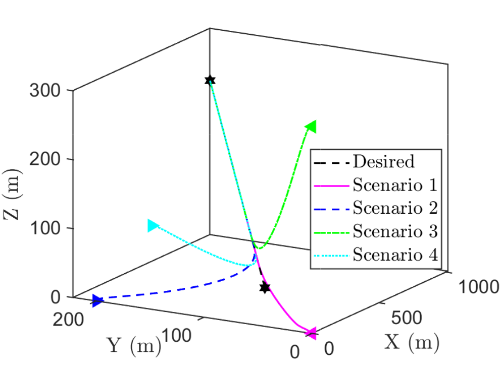
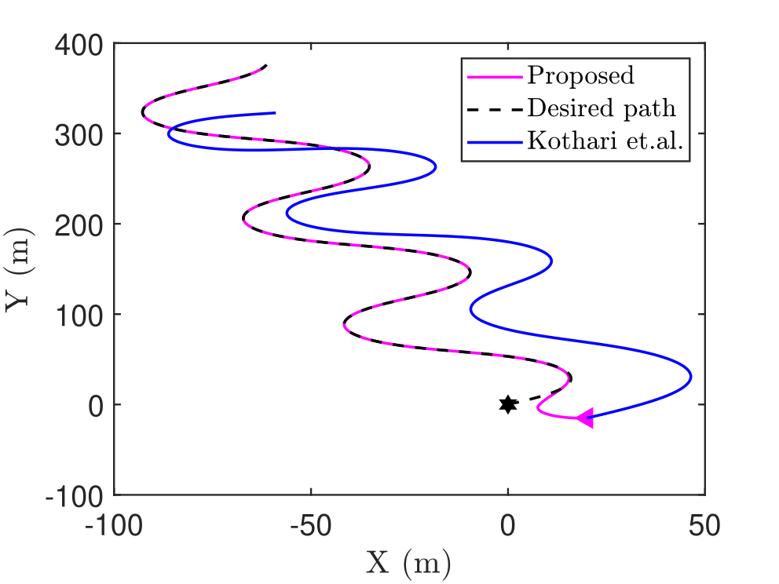
Simulation videos from the paper: three-dimensional path following.
Path Following with Bounded Inputs
Three-dimensional Nonlinear Path-following Guidance with Bounded Input Constraints
Saurabh Kumar, Shashi Ranjan Kumar, and Abhinav Sinha, AIAA Journal of Guidance, Control, and Dynamics, Vol. 49, No. 1, 2026, pp. 198–215.
A real UAV cannot fly faster than \(V_U^{\max}\), a fixed-wing aircraft cannot fly slower than its stall speed \(V_0\), and the angular rates are limited. Clipping a command at its limit invalidates the stability proof. Therefore, this work builds the limits into the design. Each input is generated by a smooth saturation model. For the speed, with the shifted variable \(\mathcal U = V_U - (V_0+V_U^{\max})/2\) and \(\mathcal U^{\max} = (V_U^{\max}-V_0)/2\),
\[ \dot{\mathcal U} = \mathcal K_1\left[1-\left(\frac{\mathcal U}{\mathcal U^{\max}}\right)^{\gamma}\right]\mathcal U^{c} - \mathcal K_1\mathcal K_2\,\mathcal U, \qquad \gamma \text{ even}, \]
and similarly for the pitch and yaw rates. The gain on the command vanishes as the input approaches its limit, so any finite command keeps the actual input strictly inside \(V_0 < V_U < V_U^{\max}\) and \(|\omega_U^{y,z}| < \omega_U^{\max}\).
Illustrative command signal passed through the speed saturation model with \(V_0=3\) m/s, \(V_U^{\max}=25\) m/s, \(\mathcal K_1=2,\ \mathcal K_2=0.5,\ \gamma=2\).
Because the saturation model sits between the command and the vehicle, each loop gains a relative degree. The commands are therefore designed by backstepping, with a virtual input for each loop that drives the range and the two lead angles \(\psi_U\), \(\theta_U\) to zero in fixed time. Unlike the 2024 design, the lead angles are regulated individually, so no allocation step is needed. For instance, the speed command is
\[ \mathcal U^{c} = \frac{\mathcal K_1\mathcal K_2\,\mathcal U + \dot\chi + |x|\cos\theta_U\cos\psi_U - \left(\mathcal M_1 x^{\alpha_1} + \mathcal N_1 x^{\beta_1}\right)}{\mathcal K_1\left[1-(\mathcal U/\mathcal U^{\max})^{\gamma}\right]}, \qquad x = \mathcal U - \chi, \]
where \(\chi\) is the virtual speed that would close the range in fixed time. Setting \(V_0=0\) gives a multirotor that may hover. Setting \(V_0>0\) gives a fixed-wing UAV that must keep flying above stall.
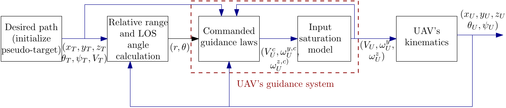
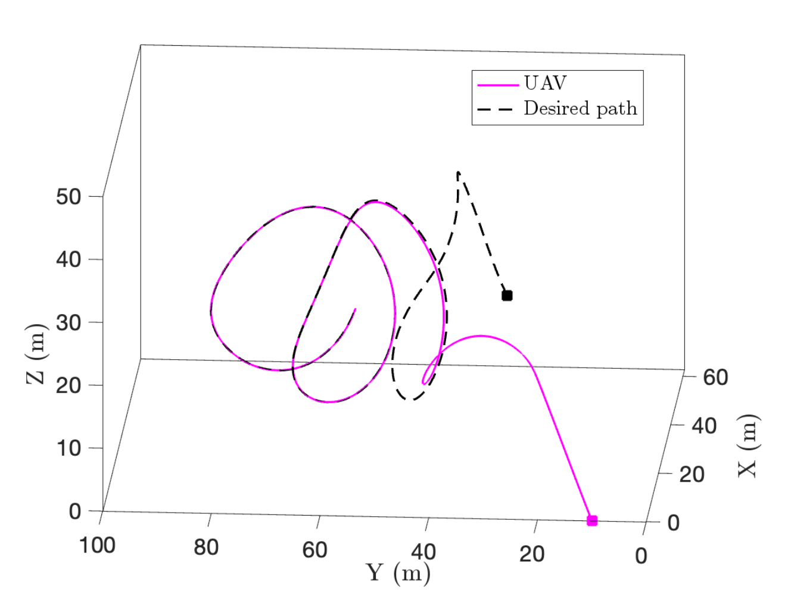
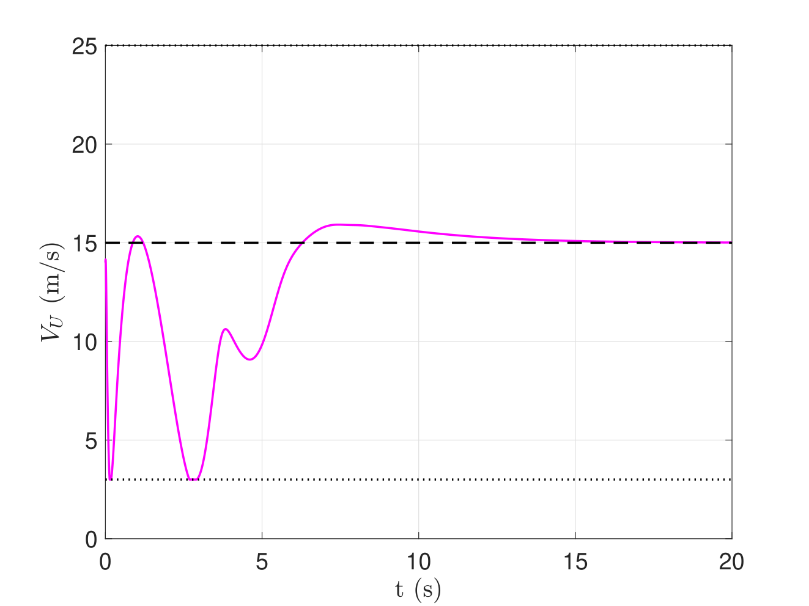
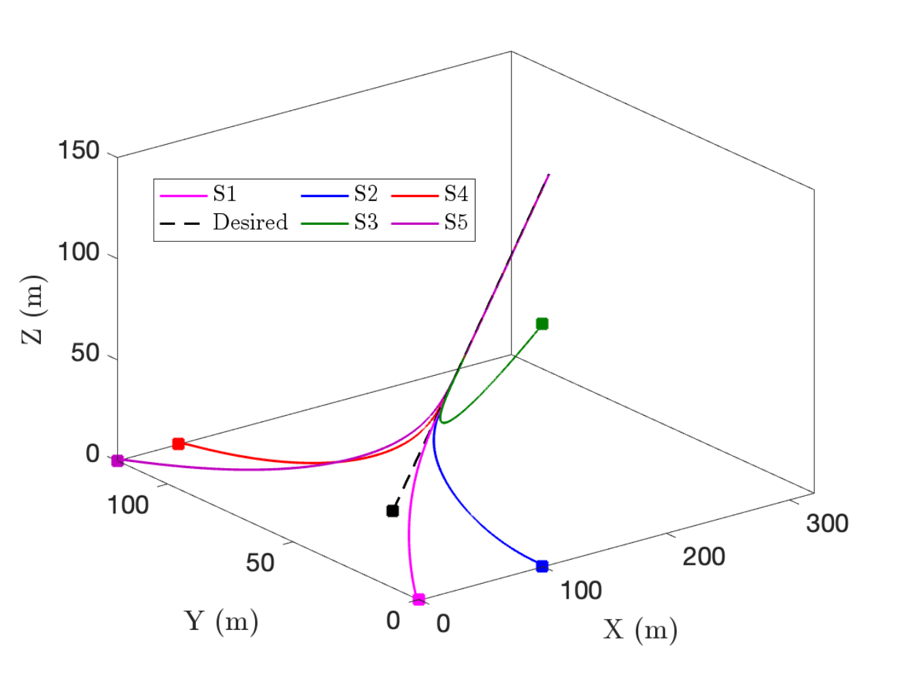
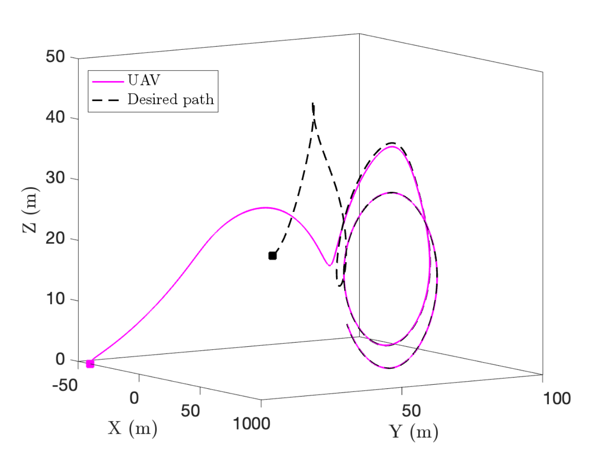
Path Following Guidance with Bounded Control
Saurabh Kumar, Shashi Ranjan Kumar, and Abhinav Sinha, AIAA GNC Conference, Orlando, USA, 2026.
This paper presents the planar counterpart of the design above. The speed and turn-rate saturation models are combined with backstepping laws that drive the look angle \(\zeta=\theta-\chi_U\) and then the range \(r\) to zero in fixed time. Both the linear speed and the turn rate stay within their bounds at all times.
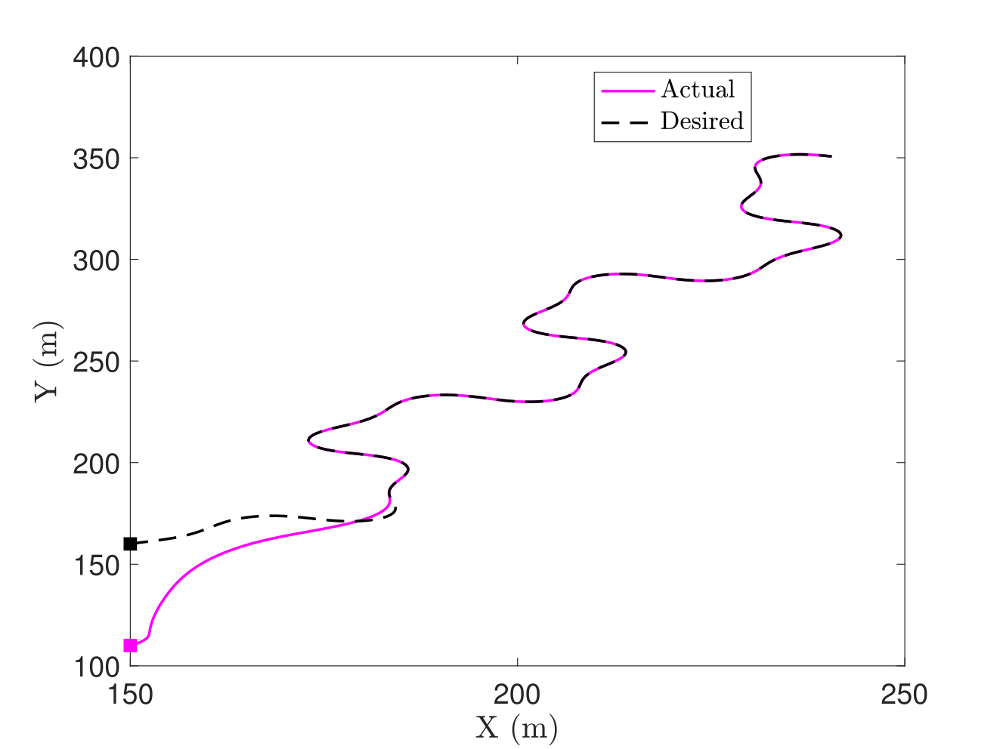
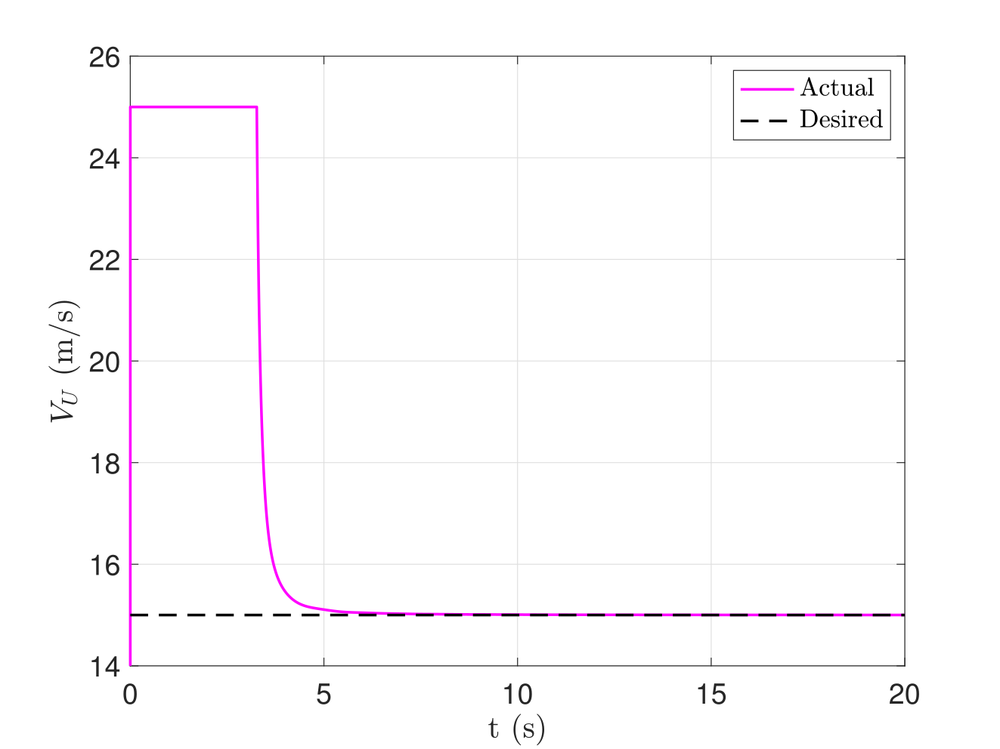
The classical way to state path following is through the cross-track error \(d\), the signed perpendicular distance from the UAV to the closest point on the path, together with the angle \(\psi_d\) of the path tangent at that point. For a UAV flying at constant speed \(v\) with lateral acceleration \(a_m\) as the input,
\[ \dot d = v\sin(\psi-\psi_d), \qquad \ddot d = a_m\cos(\psi-\psi_d) - v\dot\psi_d\cos(\psi-\psi_d). \]
The rate \(\dot d\) has the same form for every path; only \(d\) itself depends on the geometry. Therefore, a law written in \((d,\dot d)\) applies to straight lines, circles, and general smooth curves alike. The term \(v\dot\psi_d\cos(\psi-\psi_d)\) carries the path curvature. My designs either reject it as a bounded disturbance \(\Delta\) or cancel it explicitly, and then shape the response of \(d\): in finite time with terminal sliding mode, or exponentially with a guaranteed bound on \(a_m\) with nested saturation.
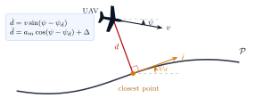
How the Work Developed
Both laws are simulated at \(v=10\) m/s, from the four starting points used in the nested-saturation papers. Nested saturation: \(k_1=k_2=1\), \(M_2'=10\) m/s\(^2\), \(M_1=M_2/2.1\). Terminal sliding mode: \(p/q=15/13\), with \(\beta=2,\ \eta=20\) (line, sinusoid) and \(\beta=5,\ \eta=50\) (circle) as in the 2023 simulation code, and \(|a_m|\le 50\) m/s\(^2\). The shaded band marks \(\pm10\) m/s\(^2\): the nested-saturation command never leaves it. The sliding-mode law converges faster; however, its commands exceed the band by a wide margin during the reaching phase. The red segments show the cross-track error \(d\) to the closest point.
Terminal Sliding Mode Guidance
Robust Path-following Guidance for an Unmanned Vehicle
Saurabh Kumar, Shashi Ranjan Kumar, and Abhinav Sinha, AIAA GNC Conference, National Harbor, MD, USA, 2023.
The curvature term is lumped into a bounded disturbance, \(\ddot d = a_m\cos(\psi-\psi_d) + \Delta\), so the law needs no curvature information. A nonsingular terminal sliding surface and the guidance command
\[ \mathcal S_d = d + \frac{1}{\beta}\,\dot d^{\,p/q}, \qquad a_m = \frac{-1}{\cos(\psi-\psi_d)}\left[\beta\frac{p}{q}\,\dot d^{\,2-p/q} + \eta\,\mathrm{sign}(\mathcal S_d)\right], \qquad 1<\frac{p}{q}<2,\ \ \eta>\Delta_{\max}, \]
bring the UAV onto the surface in finite time and then drive \(d\) to zero in finite time. Once the UAV is on the sliding surface, \(d\) reaches zero within \(\frac{p}{\beta(p-q)}\,|d(t_0)|^{(p-q)/p}\) seconds. Because the law treats curvature only as a disturbance, the same design follows any smooth path. The paper shows finite-time convergence from arbitrary initial conditions on straight lines and circles. It also shows robustness to an external disturbance (\(0.1\sin t\)) and to a first-order autopilot lag \(1/(0.1s+1)\).
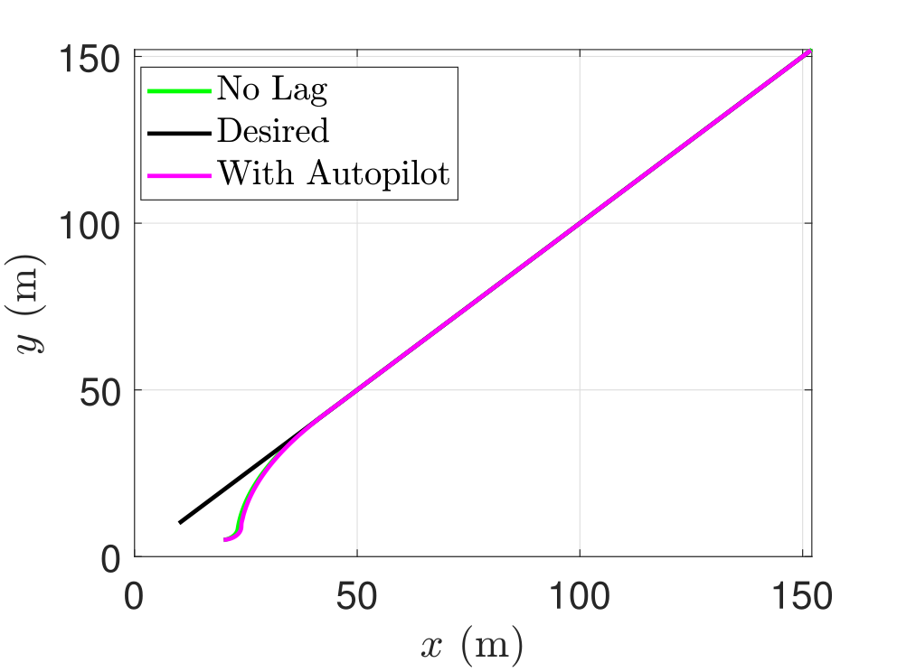
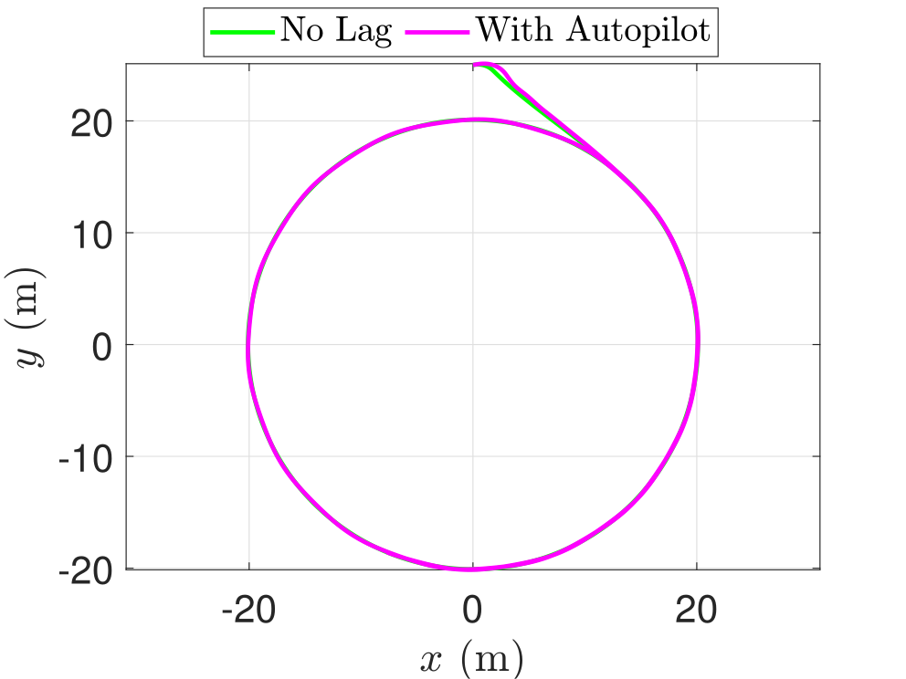
Simulation video: straight line from four initial conditions.
Separate Guidance and Control Design for Autonomous Path-following
Saurabh Kumar, Shashi Ranjan Kumar, and Abhinav Sinha, IFAC-PapersOnLine, Vol. 55, No. 22, 2022, pp. 212–217.
This paper pairs the terminal sliding mode guidance law with a separate control loop. The guidance loop produces a commanded lateral acceleration \(a_m^c\) from the sliding surface \(\mathcal S_d\) above. A real airframe does not deliver \(a_m^c\) instantly, so an inner loop is added. This loop is also a finite-time sliding-mode design, and it drives the acceleration error \(\varrho = a_m - a_m^c\) to zero through a second-order autopilot (\(\omega_n=30\) rad/s, \(\xi=0.5\)). Each loop converges in finite time, and the inner loop is designed to be faster, so the UAV follows the path with the dynamics of the real actuator included.
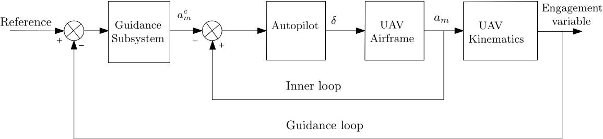
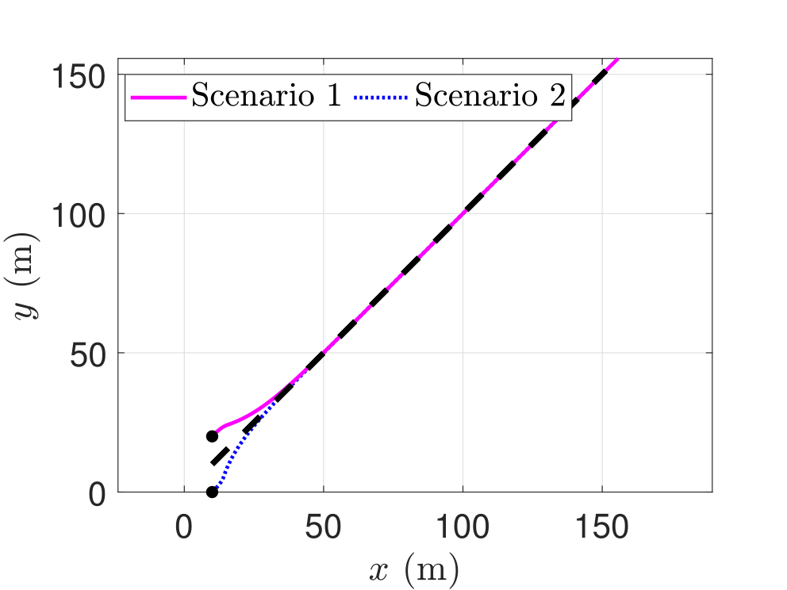
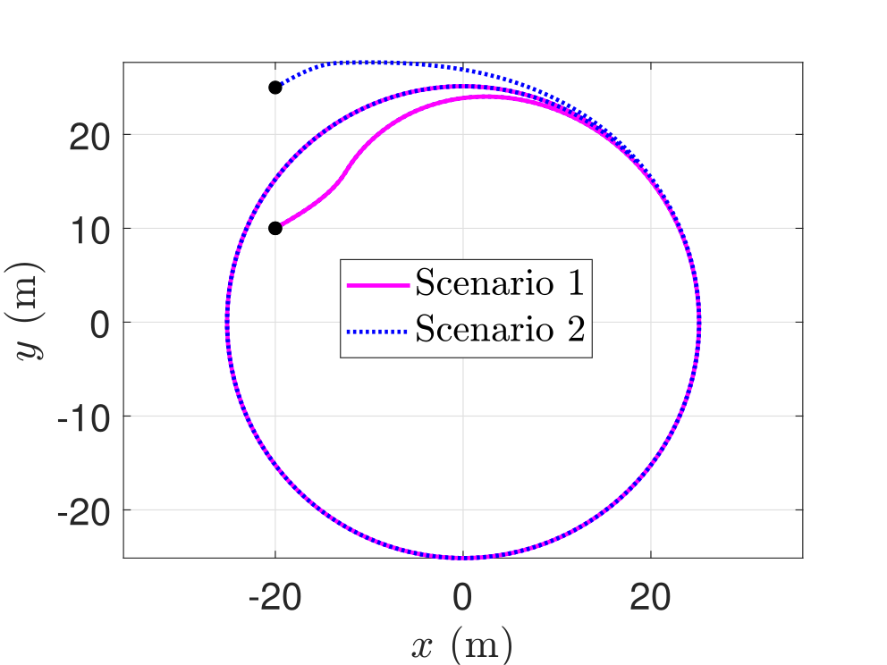
Simulation video: circular orbit.
Bounded Lateral Acceleration via Nested Saturation
Input Constrained Planar Path-Following Guidance for Unmanned Aerial Vehicles
Vinay Kathiriya, Saurabh Kumar, and Shashi Ranjan Kumar, Asian Control Conference, Bali, Indonesia, 2026.
A fixed-wing UAV has a hard limit \(|a_m|\le a_{\max}\) on its lateral acceleration. A sliding-mode command can exceed it by a large margin during the reaching phase, as the comparison above shows. This work guarantees the limit by construction. A feedback-linearizing input
\[ a_m = \frac{u + v\dot\psi_d\cos(\psi-\psi_d)}{\cos(\psi-\psi_d)} \]
turns the error dynamics into a double integrator \(\dot d_1 = d_2,\ \dot d_2 = u\) with \(d_1=d\), \(d_2=\dot d\). A change of coordinates \(h_1 = k_1k_2d_1 + k_2d_2\), \(h_2 = k_1d_2\) places the closed-loop poles at \(-k_1\) and \(-k_2\). The auxiliary input is then built from two nested saturations,
\[ u = -\sigma_2\big(h_2 + \sigma_1(h_1)\big), \qquad M_2 = \left|\left(M_2’ - v|\dot\psi_d|\right)\cos(\psi-\psi_d)\right|, \quad M_1 \le \frac{M_2}{2}, \]
where \(\sigma_i\) saturates at \(M_i\). The outer level \(M_2\) is tied to the path curvature, which gives
\[ |a_m| \le M_2’ - v|\dot\psi_d| + v|\dot\psi_d| = M_2’ \quad \text{for all } t. \]
The proof shows that \(h_2\) and then \(h_1\) enter the linear regions of the saturations in finite time, after which \(d\) and \(\dot d\) decay exponentially with rates \(k_1\), \(k_2\). The only requirement is that the path be flyable, \(v|\dot\psi_d| \le a_{\max}\).
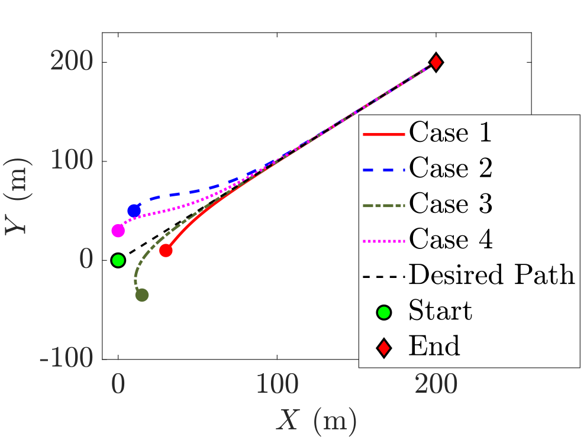
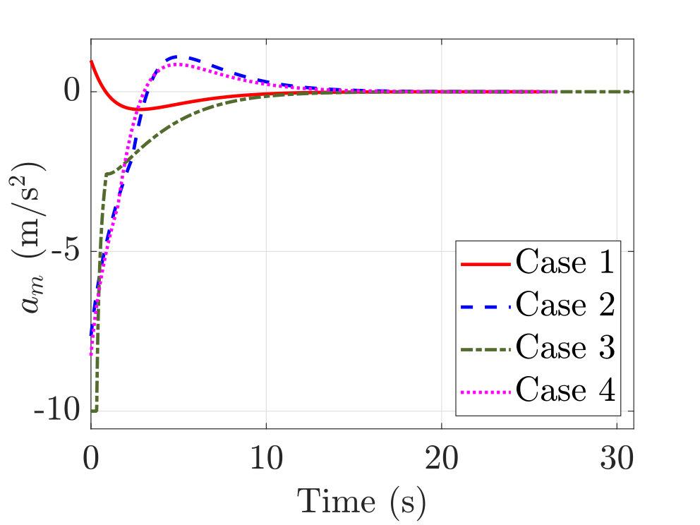
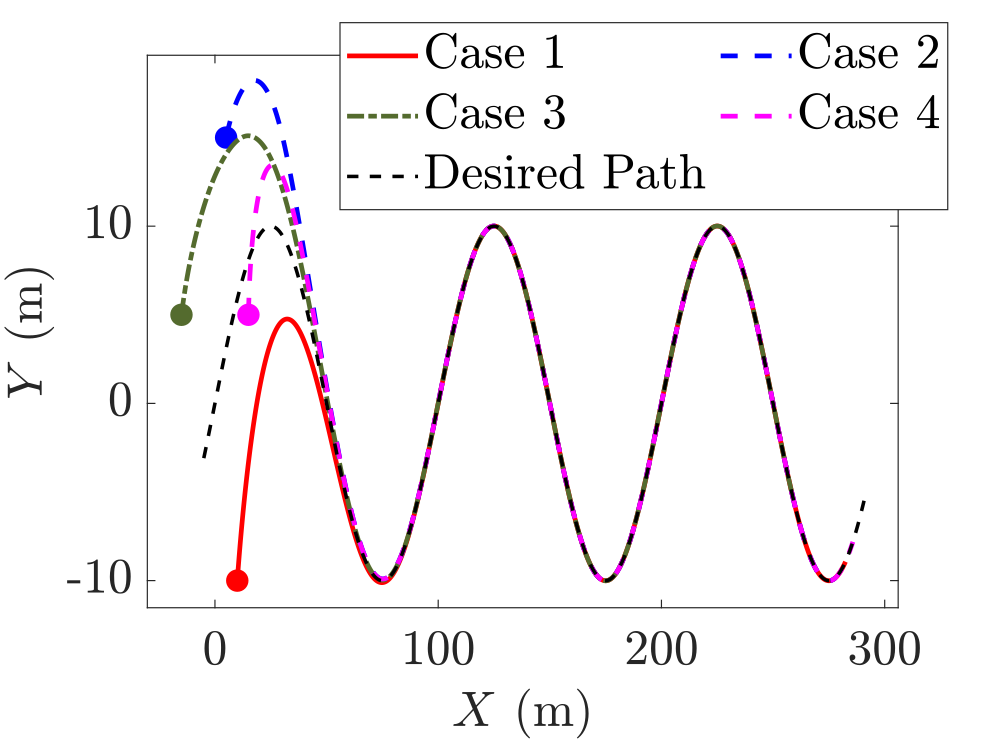
Path-Following Guidance for Unmanned Aerial Vehicle with Bounded Lateral Acceleration
Vinay Kathiriya, Saurabh Kumar, and Shashi Ranjan Kumar, Aerospace Science and Technology, 2026, pp. 1–17.
The journal version extends the design to three dimensions. The error vector to the closest point is projected onto a local path frame, giving a horizontal error \(d_h\) and a vertical error \(d_v\). Each channel gets its own nested-saturation law, so the horizontal and vertical accelerations stay within \(|a_h|\le M_{2,h}'\) and \(|a_v|\le M_{2,v}'\) throughout.
The simulations cover the following cases:
straight lines, circles, and sinusoids;
a composite path that switches between lines, a sinusoid, and an arc;
an inclined circle in 3D;
wind gusts.
Against four existing laws (adaptive optimal, pure pursuit + LOS, sliding mode, and an earlier nested-saturation law), the proposed law is the only one whose command stays inside the bound, and it uses the least control effort. On a straight line its RMS effort is 0.26 ms², against 0.51–3.19 ms² for the others.
The law was also run processor-in-the-loop. The guidance runs on a Raspberry Pi 4B, the UAV model runs in Simulink, and the two exchange data over UDP. The deployed response matches the simulation (RMS effort 2.56 vs 2.54 m/s²), and each guidance update takes about 8 μs against a 10 ms control period.
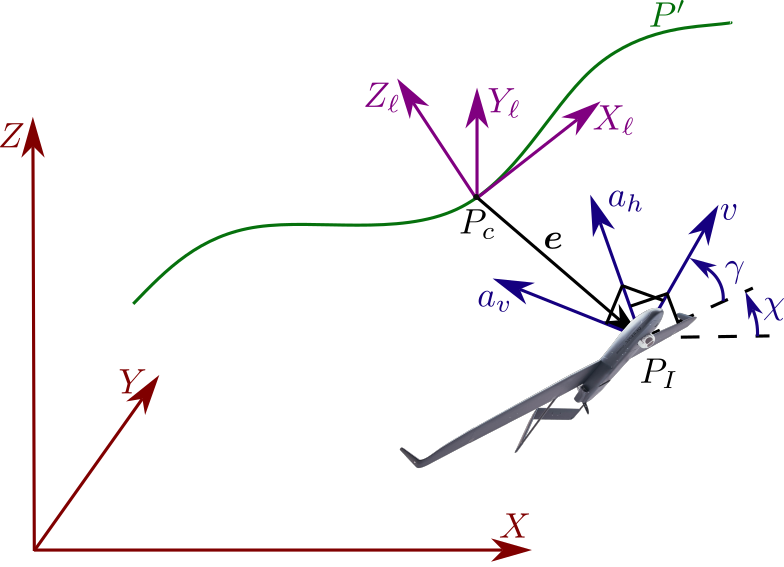
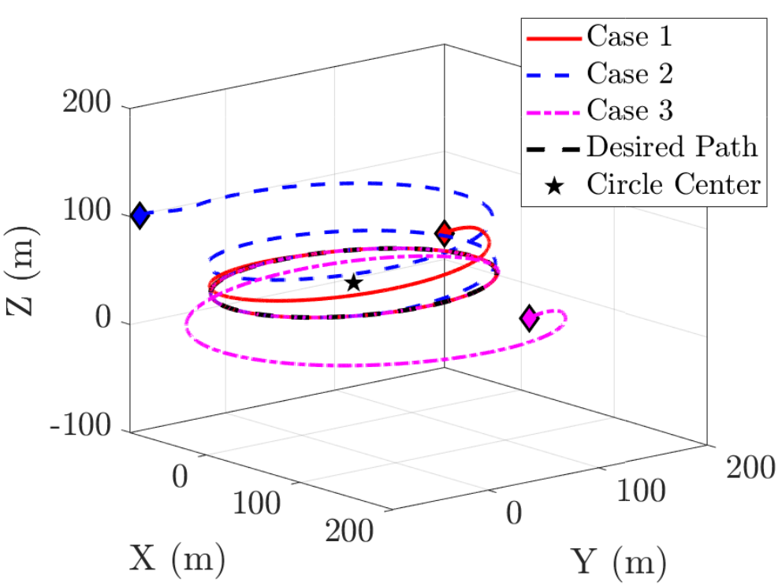
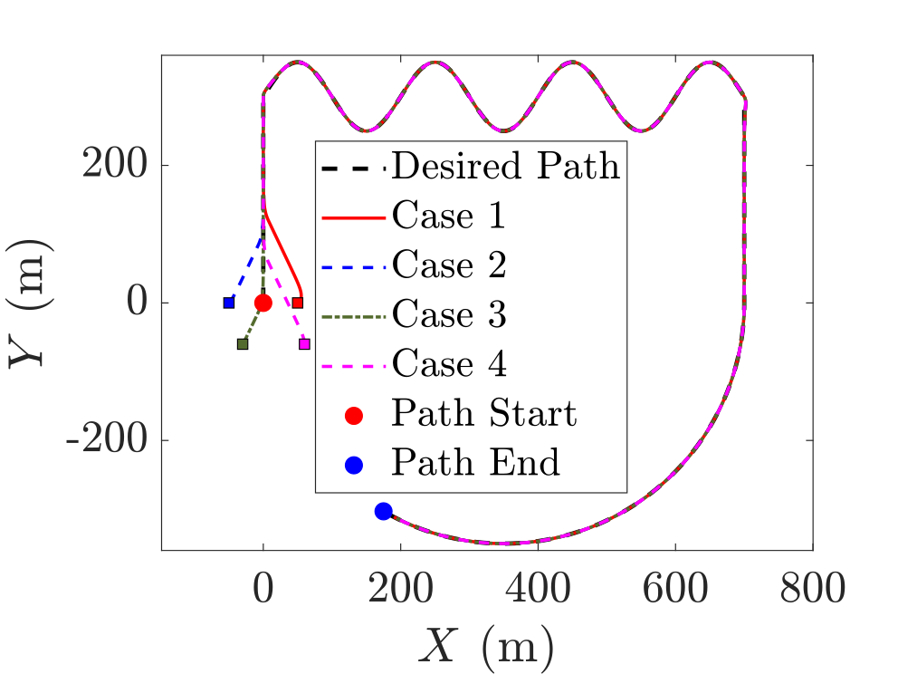
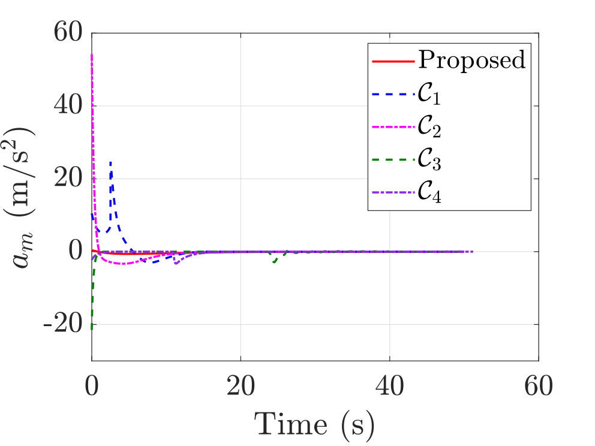
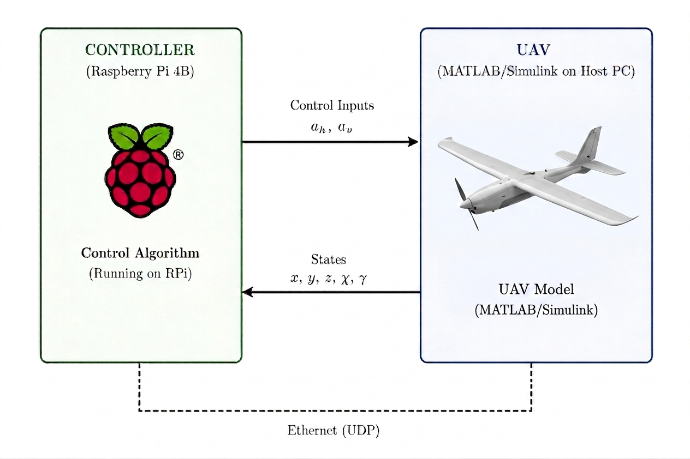
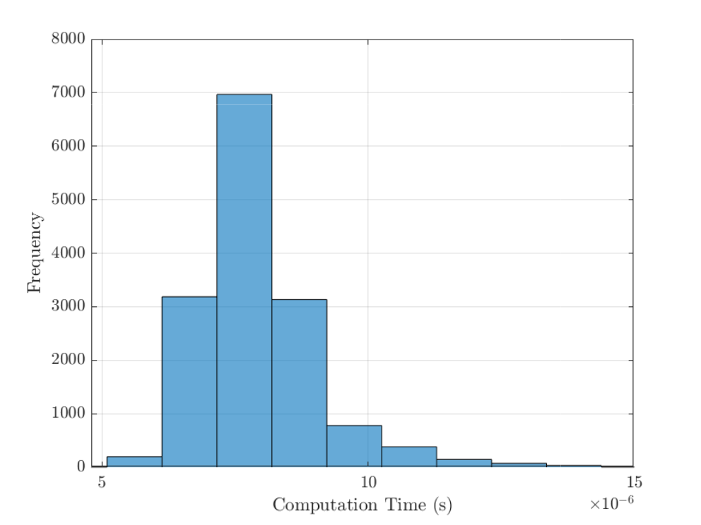
Relevant Publications
Journal Papers
Saurabh Kumar, Shashi Ranjan Kumar, and Abhinav Sinha, Three-dimensional Nonlinear Path-following Guidance with Bounded Input Constraints, AIAA Journal of Guidance, Control, and Dynamics, Vol. 49, No. 1, 2026, pp. 198–215.
Vinay Kathiriya, Saurabh Kumar, and Shashi Ranjan Kumar, Path-Following Guidance for Unmanned Aerial Vehicle with Bounded Lateral Acceleration, Aerospace Science and Technology, 2026, pp. 1–17.
Saurabh Kumar, Shashi Ranjan Kumar, and Abhinav Sinha, Three-Dimensional Path Following Nonlinear Guidance for Unmanned Aerial Vehicles, AIAA Journal of Guidance, Control, and Dynamics, Vol. 47, No. 6, 2024, pp. 1231–1240.
Saurabh Kumar, Abhinav Sinha, and Shashi Ranjan Kumar, Robust Path-following Guidance for an Autonomous Vehicle in the Presence of Wind, Aerospace Science and Technology, Vol. 150, 2024, pp. 109225.
Conference Papers
Vinay Kathiriya, Saurabh Kumar, Shashi Ranjan Kumar, Input Constrained Planar Path-Following Guidance for Unmanned Aerial Vehicles, Asian Control Conference, Bali, Indonesia, 2026.
Saurabh Kumar, Shashi Ranjan Kumar, and Abhinav Sinha, Path Following Guidance with Bounded Control, AIAA GNC Conference, Orlando, USA, 2026.
Saurabh Kumar, Abhinav Sinha, and Shashi Ranjan Kumar, Generic Path-following Guidance for an Autonomous Vehicle, AIAA GNC Conference, Orlando, USA, 2024.
Saurabh Kumar, Shashi Ranjan Kumar, and Abhinav Sinha, Robust Path-following Guidance for an Unmanned Vehicle, AIAA GNC Conference, National Harbor, MD, USA, 2023.
Saurabh Kumar, Shashi Ranjan Kumar, and Abhinav Sinha, Separate Guidance and Control Design for Autonomous Path-following, IFAC-PapersOnLine, Vol. 55, No. 22, 2022, pp. 212–217.